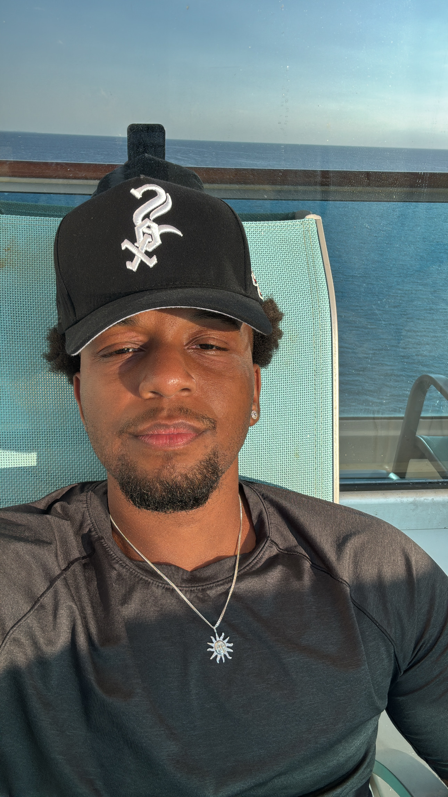

Elijah Louis is a New York based audio engineer-turned-web designer. I started audio engineering as an amateur when I set out to make music of my own on Logic Pro X. Since then, I have graduated from Laguardia CC with an A.A.S. in audio engineering, fully equipped with professional studio knowledge, DAW skills, and an understanding of what artists look for in an engineer.
After exploring the underground music scene, I’ve come out with original music published, a resume of performed venues, and memories to last a lifetime. What I’ve enjoyed most is watching a person’s eyes light up as I bring their mixing ideas to life.
